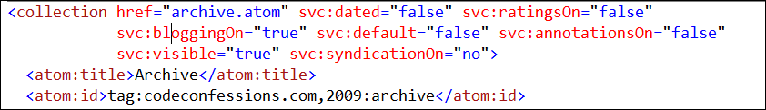

Carl Sagan once remarked, “To create an Apple pie from scratch, you must first invent the universe.” So it almost went with my attempt at a blog site back in August.
Eventually I came to my senses and decided that I would check out the wide array of open source solutions for blogging. Surely there was something out there that met my needs. I started by looking at some of the ones I was familiar with by their reputation.
WordPress has such wide adoption I frequently see articles and classes for graphic designers focused on WordPress template creation. The shear number of templates available is a strong argument for WordPress adoption. It also has a very mature, polished feel. Yet I decided not to adopt WordPress in part because I am running a Windows server and also in part because I’m a .NET developer and want a platform I can tweak if needed.
I also decided to look at the various engines available via the Microsoft Web Platform Installer. These included Das Blog of Scott Hanselman fame, Subtext of Phil Haack fame, and BlogEngine.NET. All of these were more than adequate for my needs and I really had a tough time decided amongst them. I also decided to downloaded a new engine I had not heard of called AtomSite .
After playing with all of them, much to my surprise I decided on AtomSite .
About AtomSite
AtomSite is available on CodePlex as well as via the MS Platform Web Installer.
Because of its relative newness, AtomSite lacks some of the features of more mature frameworks. For example, it doesn’t have the breadth of themes some frameworks have. Administrative features are still under construction though everything can be done directly through the service.config file. Documentation is also fairly scant. Still, if you are willing to work through these issues, it really is a good framework for hosting.
From a development standpoint, it is nascent and as such has exciting and frequent updates. It is also the first open source blog engine I am aware of that is based on the ASP.NET MVC framework (aside from the Mix 09 one which didn’t appeal to me). In its source AtomSite strives to embrace C# features which I appreciate. It also makes good use of JQuery and the HTML is well done and readable. It also makes use of YUI grids, a technology I wasn’t very familiar with but really does make clean design across multiple browsers a cinch. Lastly, it embraces XHTML which I find refreshing.
AtomSite also has a reasonably nice plugin architecture. One plugin featured prominently is support for OpenID. I feel it is now essential for every developer blog to support OpenID. In terms of file storage, it uses angle brackets on disk and adheres well to the atom protocol. If you have access to your disks you can do lots of nice find and replace with PowerShell or your tool of choice. And backup is as easy as copying files.
Initial setup was a little rough but this was largely because I had trouble understanding how the Service.config file worked and how the general site was structured . Recently AtomSite’s coordinator Jared Vance requested users send in their third party config files, and this really helped clarify what sites were doing.
Understanding the Service.config File
As defined on AtomSite, the service.config file adheres to the service document standard for Atoms.
In the service.config file, one or more workspaces are created each which consist of one or more collections. I’m going to skip covering workspaces as I imagine most sites will consist of one workspace.
Collections are where the action begins. Each collection refers to a set of “atoms” which is just an XML document adhering to the atom standard. In fact in AtomSite’s implementation, each collection gets its own folder on disk which contains all of the “atoms” that make up that collection.
An example custom collection is shown below based on this site.

Let’s look at these some of these properties.
| Element | Description |
|---|---|
| href | An IRI (A URI but International Resource Identifier) that identifies the collection. Should be unique to the workspace. Required by the Atom standard. |
| svc:dated | Refers to whether to use dates when generating URLs and IDs for items in this collection. A blog would likely be dated whereas static pages would not. The source code shows two examples. Dated: /2008/10/10/MyBlogPost.xhtml Not dated: http://example.com/info/About.xhtml |
| svc:ratingsOn | Whether to allow ratings for items in this collection (or not). Be careful because everything supports ratings whether you want them rated or not |
| svc:annotationsOn | Whether to allow comments on items in this collection (or not). As with ratings, everything can be annotated so be careful when this is set to true (Do you really want your “About picture” to have comments?) |
| svc:syndicationOn | Whether to allow syndication feeds of items in this collection or not. |
| svc:Visible | Whether a collection is “visible” or not. Primarily this means it doesn’t show up on the menu widget when auto populated nor does it show up in syndication regardless of the value of syndication on. Secondarily it causes items not to show up in search and a couple other instances. This property makes the most sense when the contents of a collection are there purely to be referenced by another collection as in the case of media. |
| svc:bloggingOn | This property seems to indicate if AtomSite should act in a protected mode when parsing content (trusting comments). It also overlaps a lot with annotationsOn. I need to get more clarification on this property. |
| svc:default | Determines if this collection is the default collection in the workspace. If a request doesn’t indicate a specific collection, the one marked default is returned. When a request is made of a “workspace” (typically a site) without a specific collection specified in the URI, the collection marked as default handles the request. For example, if you hit http://www.codeconfessions.com, the blog collection is default. |
| atom:title | Required by the Atom standard. An arbitrary title. |
| atom:id | Unique id identifying a collection. |
Pages aren’t really
Probably the most difficult to grasp concept in Atomsite are svc:pages. I can understand why there was difficulty naming them as “view” is taken in MVC.
Svc:pages do not refer to physical pages. Rather, they refer to a layout of widgets and are used to determine how collections at various views will be shown.
Perhaps more important to know is that the svc:page name property is not arbitrary. In fact name actually refers to the purpose of a widget and refers to a predefined class in the source code.
<svc:page name=”BlogHome”> refers to the widget layout set for the landing page for a workspace. To generate the initial landing page for your site, AtomSite takes the widget set defined in BlogHome and applies it to your default collection in your default workspace.
<svc:page name=”BlogListing”> refers to the widget layout set used to display a list of items in a collection. When a collection is requested (rather than a specific entry in a collection) this view is used.
<svc:page name=”BlogEntry”> refers to the widget layout used to display a single item in a collection. Examples include a single blog entry or a single page of content.
Summing Up
AtomSite has a lot of potential and I am very happy with the quality of work that has gone into creating it. There are still rough edges, but for a relatively new community contribution, it really is shaping up quickly. If you are considering starting a blog, I would definitely give it a try.
Addendum 7/31/2010: As you can see I did finally decide to transition from AtomSite to WordPress. I still consider AtomSite to be a great piece of software, but I needed something with wider adoption and more templating options.
Addendum 8/6/2016: And from WordPress to hexo!